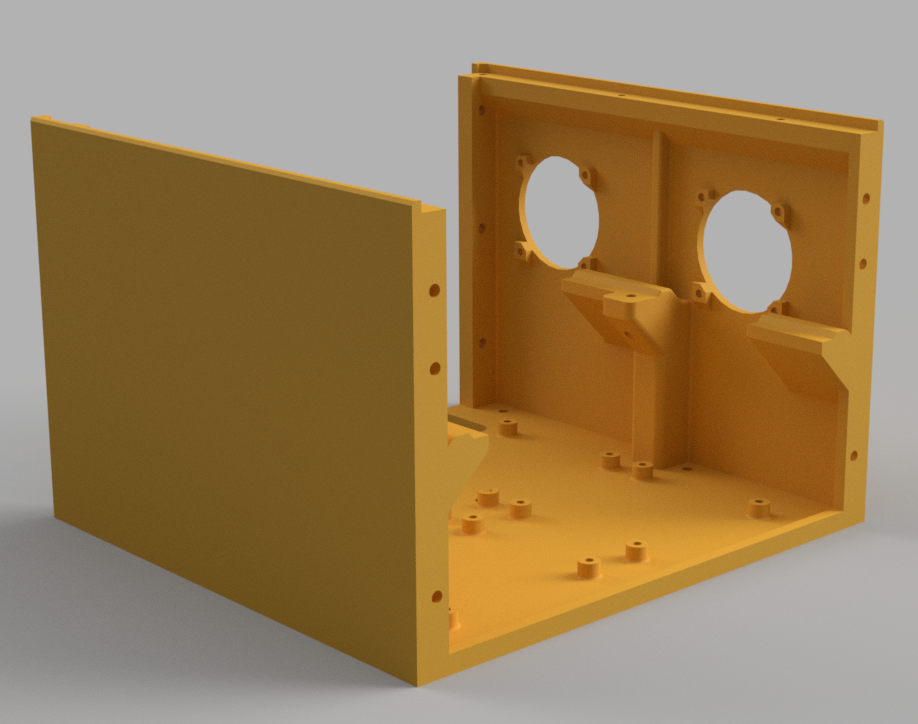
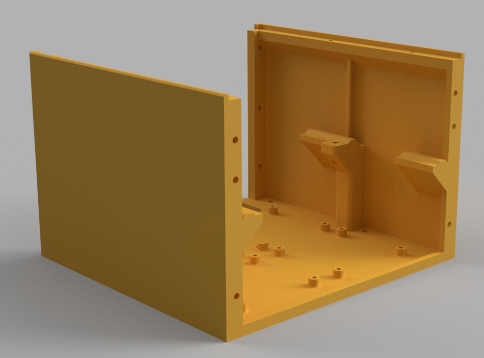

Guided Tour
This is a visual tour of an OmniBox. This page demonstrates:
- What the core parts of OmniBox are, along with their variations;
- What trays and panels do; and
- How these pieces fit together.
Links are provided to the respective git folder for each component type.
Core Components
Core components form the basis of every electronics case. They can be found in the Core folder in the GitHub repository.
There are five (5) Core components: three (3) universal parts and two (2) that have variations.
{kind=link}
These are the components, as numbered in the picture above.
- Main Body - Front
- Main Body - Crossbar
- Main Body - Rear
- Base - Front
- Base - Rear
Universal Parts
These are required and do not have variations.
Base - Front
This is the front of two base pieces that cover the power supply. There is a 30mm x 11mm rocker switch cutout in front, as well as air vents and an optional 40mm fan.
Base - Rear
The back covers the rest of the power supply and mounts a fused IEC power plug.
Main Body - Crossbar
This is a crossbar that joins and covers the joint between the lids and front display.
STLs
| Part | Printed Qty | Link |
|---|---|---|
Base - Front.stl |
1 | STL |
Base - Rear.stl |
1 | STL |
Main Body - Crossbar.stl |
1 | STL |
Core Parts with Variants
Your power supply unit (PSU) will mount underneath the main body. The Core folder has one subfolder for each supported PSU.
Currently the two supported PSUs are:
- Mean Well LRS-350
- Mean Well RSP-500 (Preliminary)
Main Body - Front
The front main body comes in two variations to choose from.
The version with a 60mm external fan additional requires the appropriate fan cage. Optionally, a TPU gasket can also be used with the fan cage.
| 40mm Optional Fan | 60mm External Fan |
|---|---|
 |
 |
| Variation | Printed Qty | LRS-350 Link | RSP-500 Link |
|---|---|---|---|
Main Body - Front with 40mm Intake.stl |
1 | STL | STL |
Main Body - Front with 60mm Intake.stl |
1 | STL | STL |
Main Body - Rear
The rear main body also comes in two variations. For the dual 40mm fan version, you will also need to print 40mm fan cages and (optionally) TPU gaskets.
| Dual 40mm Fans | No Fan Mounts |
|---|---|
|  |  |
| Variation | Printed Qty | LRS-350 Link | RSP-500 Link |
|---|---|---|---|
Main Body - Rear No Fans.stl |
1 | STL | STL |
Main Body - Rear with 40mm Exhausts.stl |
1 | STL | STL |
Trays
Trays are used for mounting parts internally. They come in three types:
{kind=link}
- MCU tray
- Lower bay tray
- CPU tray
Tray templates are available in both STEP and Fusion 360 format to add support for new products.
MCU tray
MCU trays mount a microcontroller unit--your 3D printer board.
Lower Bay
The lower bay is a configurable area to mount parts like buck converters and MOSFETs.
List of supported lower bay parts
CPU Tray
The CPU tray is an optional mount for a Raspberry Pi. There is a blank cover if you do not use a Raspberry Pi or other SoC CPU.
Panels

- Front panel
- Display panel
- Lid
- Rear panel (not visible)
- Fan cage (see next section)
| Panels | Qty | Folder Link | Notes |
|---|---|---|---|
| Rear Panel | 1 | Link | See directions below. |
Panels have a range of supported parts and options. There is a blank STEP and Fusion 360 template for each panel category. Additionally, all panel variations have STEP source files. Fusion 360 files are also usually available.
As with trays, links in this section are to folders rather than individual .STL files.
Front Panel
The front panel serves as an air vent and location to put a MicroSD card reader extension. USB extensions are also a common accessory.
Display Panel
This area mounts LCD displays, from the basic 128x64 character display to Raspbery Pi TFTs.
- Files:
Panels/Display - Supported parts
Lid(s)
The lid is both a way into your case and a configurable panel. There are two types of lids: full-length and half-length lids. You can either print one (1) full-length lid or two (2) half-length lids.
- Files:
Panels/Lids - (A full list of supported parts is not yet available)
Rear Panel
The rear panel is used for ventilation, passing wiring out of your case, and optionally an additional fan. There are stock configurations available to suit common uses. A template is also available for customization.
Rear panels with panel mounted connectors are an active area of work.
| Folder | Description | Use If... |
|---|---|---|
Generic |
These have large holes for passing wires through and come in a number of common variations. | ...You want a simple, off-the-shelf solution and there is not a custom panel that suits. |
Custom |
Designed for users of common printer configurations. | ...Your printer has a configuration available. |
Micro Fit 3 |
Use Molex Micro Fit 3 panel mounted connectors. Pinout diagrams for each panel are included. | ...You plan to create a wiring harness for an enclosed printer. |
Template |
A Fusion 360 template with profiles for panel mounted connectors and fans. | ...You want to create your own panel. |
Fans

Externally mounted fans use fan cages to cover the fan blades. There are a large number of fan sizes supported, each with a matching TPU fan gasket. The gaskets are optional and serve to reduce noise.